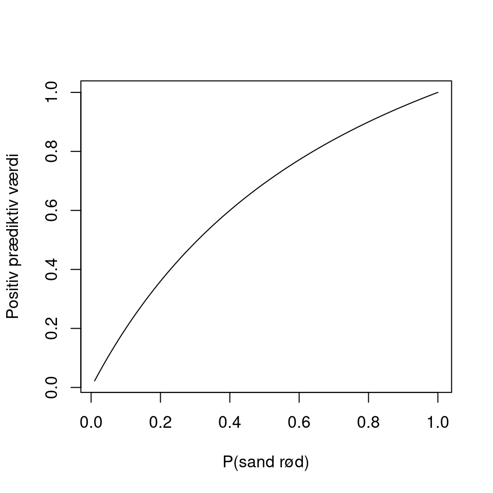
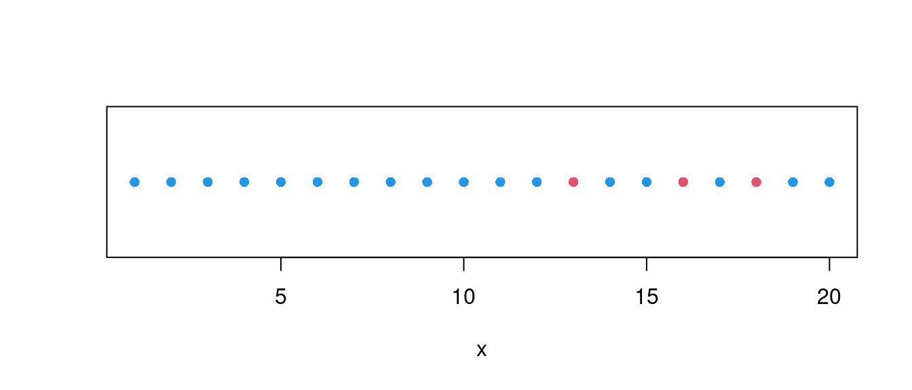
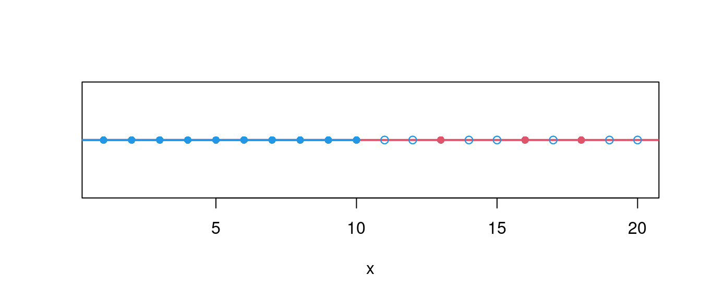
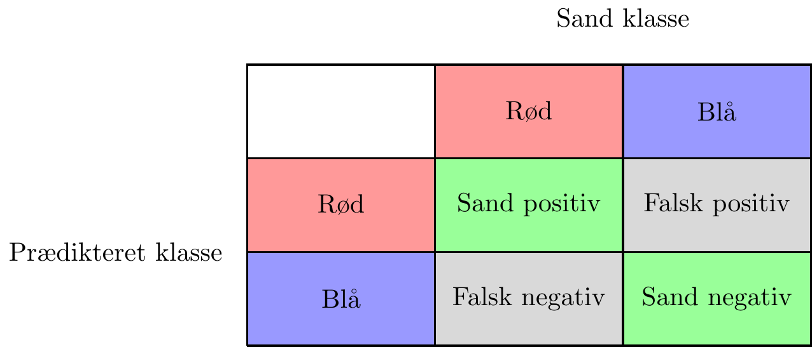
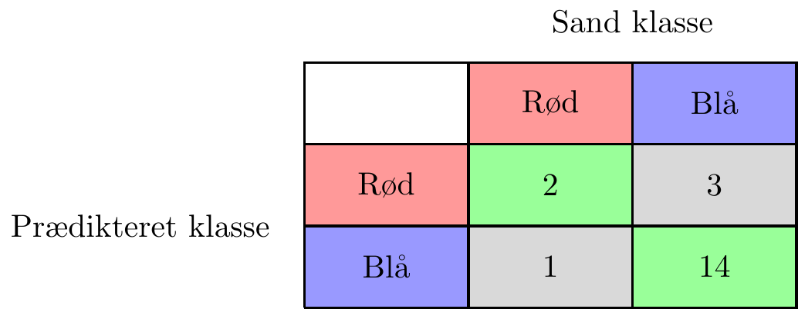
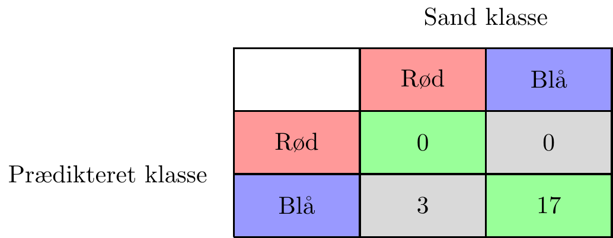
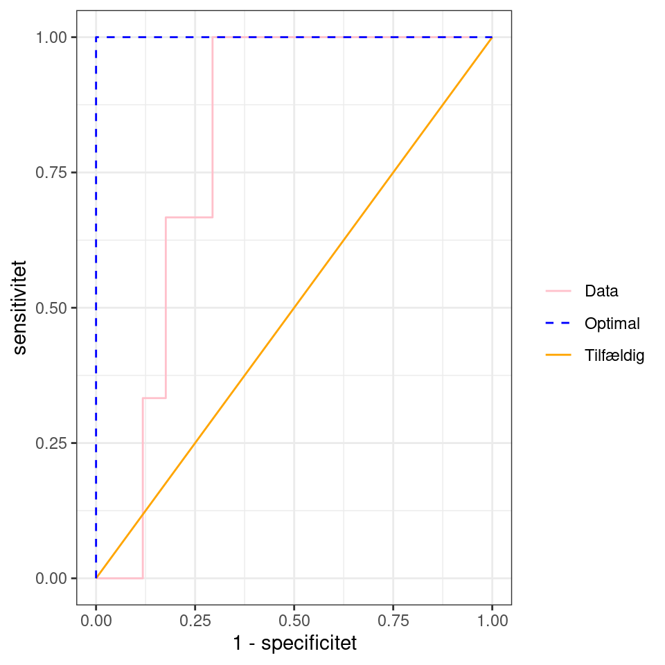
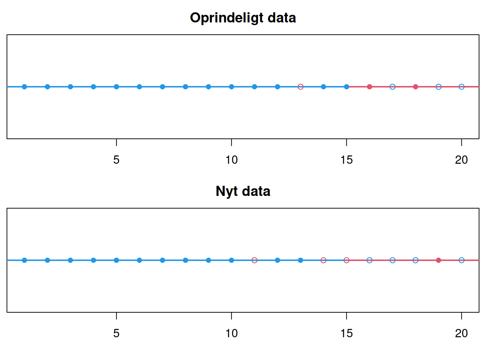

Sensitivitet, specificitet, ROC-kurver og AUC
Langt de fleste algoritmer, som vi behandler her på siden, handler om, hvordan AI kan bruges til klassifikation. Det kan være alt fra at prædiktere, om man vil stemme på rød eller blå blok ved næste valg baseret på svarene af en række spørgsmål til at prædiktere, om en patient har kræft baseret på forskellige diagnostiske test.
Når man skal vælge en god algoritme, som kan anvendes til den form for klassifikation, har man brug for at kunne sammenligne, hvor godt forskellige algoritmer prædikterer. Man er derfor nødt til at have et mål for, hvor god en algoritme er til at forudsige klasser (fx rød eller blå blok). Det mest oplagte er at tælle, hvor mange observationer algoritmen klassificerer forkert. Man kan så beregne, hvor stor en andel af alle observationerne, der klassificeres forkert. Denne andel kaldes fejlklassifikationsraten. Det er dog ikke altid det bedste mål at bruge. Det handler denne note om.
Som eksempel ser vi på et lille dataeksempel med \(20\) datapunkter, der kan have klasserne rød og blå, hvor rød er meget sjældnere end blå. Desuden er der målt en inputvariabel \(x\). Vi ønsker at finde en algoritme, der kan prædiktere farven på en observation på baggrund af \(x\). Datapunkternes klasser og \(x\)-værdier er angivet på figur 1. Ud fra figuren kunne det godt se ud til, at sandsynligheden for den røde klasse stiger, når \(x\) stiger. Der er dog også flest blå med meget høje \(x\)-værdier.

Mange prædiktionsalgoritmer benytter en tærskelværdi \(t\), således at klassen prædikteres som rød, når \(x> t\), og blå når \(x\leq t\). På figur 2 ses et eksempel med \(t=10\). De første \(10\) observationer klassificeres korrekt til at være blå. De næste \(10\) observationer prædikteres røde, selv om kun \(3\) af dem faktisk er røde. Vi får altså \(7\) fejlklassifikationer i alt. Det giver en fejlklassifikationsrate på \(7/20=0.35\).

Vi kan gøre det samme for forskellige værdier af \(t\) og tælle antallet af fejlklassifikationer. Resultatet ses i tabel 1.
| Tærskelværdi \(t\) | Antal fejl | Fejlklassifikationsrate |
|---|---|---|
| 1 | 16 | 0.80 |
| 2 | 15 | 0.75 |
| 3 | 14 | 0.70 |
| 4 | 13 | 0.65 |
| 5 | 12 | 0.60 |
| 6 | 11 | 0.55 |
| 7 | 10 | 0.50 |
| 8 | 9 | 0.45 |
| 9 | 8 | 0.40 |
| 10 | 7 | 0.35 |
| 11 | 6 | 0.30 |
| 12 | 5 | 0.25 |
| 13 | 6 | 0.30 |
| 14 | 5 | 0.25 |
| 15 | 4 | 0.20 |
| 16 | 5 | 0.25 |
| 17 | 4 | 0.20 |
| 18 | 5 | 0.25 |
| 19 | 4 | 0.20 |
| 20 | 3 | 0.15 |
Den laveste fejlklassifikationsrate får vi ved at vælge \(t=20\), sådan at alle observationer prædikteres til at være blå. Men hvis vi er ude på at identificere de sjældne røde, så er sådan en test jo ikke meget værd, fordi vi aldrig vil prædiktere nogle observationer som røde. I ovenstående eksempel kunne man i stedet have valgt at sætte \(t=12\). Så får man ganske vist \(5\) fejlklassifikationer i stedet for \(3\). Til gengæld finder man alle de røde. Det virker som et mere fornuftigt valg i vores eksempel.
Hvordan vælger man så den bedste tærskelværdi? Det vil sige, hvordan finder man en god balance mellem ikke at lave for mange fejl og samtidig fange så mange som muligt fra den sjældne klasse? Her får vi brug for et mål for, hvor godt algoritmen prædikterer hver af de to klasser. Sensitivitet og specificitet er sådanne mål.
Sensitivitet og specificitet
Lad os igen se på situationen, hvor vi har en prædiktionsalgoritme, der prædikterer klasserne rød og blå. For at få et overblik over, hvor godt algoritmen prædikterer, kan man lave en confusion matrix, som skitseret på figur 3, hvor et positivt resultat svarer til klassen rød1. Diagonalen (de grønne celler) svarer til observationer, der er klassificeret korrekt. En god algoritme skal have så mange observationer som muligt på diagonalen.
1 Ordene positiv og negativ stammer fra medicin, hvor man bruger en test til at klassificere patienter som syge eller raske. En positiv test indikerer, at patienten er syg. I andre sammenhænge svarer et positivt resultat til, at man har prædikteret den sjældne klasse.

Hvis vi udelukkende er interesseret i, hvor god algoritmen er til at prædiktere den røde klasse, kan vi kigge på sensitiviteten. Dette er sandsynligheden for, at en observation, hvis sande farve er rød, faktisk bliver klassificeret som rød, altså
\[ \textrm{sensitivitet} = P(\textrm{ en sand rød observation prædikteres som rød }) \tag{1}\]
Tilsvarende kan man måle, hvor god en algoritme er til at prædiktere den blå klasse ved at se på specificiteten. Dette er sandsynligheden for, at en sand blå observation faktisk bliver klassificeret som blå. Det kan udtrykkes som
\[ \textrm{specificitet} = P(\textrm{ en sand blå observation prædikteres som blå } ). \]
Lad os se på eksemplet fra figur 1 igen, hvor vi sætter tærskelværdien til \(t=15\). Vi udfylder confusion matricen med antallet af observationer i hver celle.

Sensitiviteten beregnes som andelen af det samlede antal sande røde, der bliver prædikteret røde. Ved at se på første søjle i figur 4 finder vi, at der er \(2+1=3\) sande røde, hvoraf \(2\) bliver prædikteret røde. Det giver sensitiviteten
\[ \textrm{sensitivitet} = \frac{\textrm{antal røde der prædikteres røde}}{\textrm{antal sande røde}} = \frac{2}{3} = 0.667. \tag{2}\]
Tilsvarende kan vi beregne specificiteten ved at se på anden søjle.
\[ \textrm{specificitet} = \frac{\textrm{antal blå der prædikteres blå}}{\textrm{antal sande blå}} = \frac{14}{3+14}= 0.824. \]
Algoritmen er altså bedst til at finde blå, da specificiteten er højere end sensitiviteten. Lad os prøve, om vi kan få højere sensitivitet med en anden værdi af \(t\). Værdien \(t=12\) var den største værdi, der kunne finde alle de røde – se igen figur 1. Det giver os confusion matricen i figur 5.
Vi beregner igen sensitiviteten og specificiteten \[\textrm{sensitivitet} = \frac{\textrm{antal røde der prædikteres røde}}{\textrm{antal sande røde}} = \frac{3}{3} = 1\] og \[\textrm{specificitet} = \frac{\textrm{antal blå der prædikteres blå}}{\textrm{antal sande blå}} = \frac{12}{5+12}= 0.706.\] Vi ser altså, at prisen for at få en højere sensitivitet er en lavere specificitet.
Endelig kan vi prøve med værdien \(t=20\), som var den, der gav den laveste fejlklassifikationsrate. Denne værdi giver confusion matricen i figur 6.

Vi finder sensitiviteten \[ \textrm{sensitivitet} = \frac{\textrm{antal røde der prædikteres røde}}{\textrm{antal sande røde}} = \frac{0}{3}= 0 \] og specificiteten \[ \textrm{specificitet} = \frac{\textrm{antal blå der prædikteres blå}}{\textrm{antal sande blå}} = \frac{17}{17}= 1. \] Testen er altså rigtig god til at finde blå klasser, men elendig til at finde røde klasser.
ROC-kurver
I praksis har man brug for at finde en tærskelværdi \(t\), som giver en god afvejning mellem sensitivitet og specificitet. Det kan afhænge af anvendelsen, hvor højt man vægter de to. Hvis man er ude på at diagnosticere en sjælden sygdom, er det umiddelbart vigtigst, at sensitiviteten er høj, så man finder alle de syge. Dog er det problematisk, hvis specificiteten bliver for lav, da man så kommer til at diganosticere mange raske som syge, hvilket kan medføre unødvendige undersøgelser og behandlinger for patienten.
Så hvordan vælger man en tærskelværdi, der giver en god afvejning mellem sensitivitet og specificitet? Som en hjælp kunne man udregne sensitivitet og specificitet for forskellige mulige værdier af \(t\). Det er for vores eksempel gjort i tabel 2.
| Tærskelværdi \(t\) | Sensitivitet | Specificitet |
|---|---|---|
| 1 | 1 | 0.059 |
| 2 | 1 | 0.118 |
| 3 | 1 | 0.176 |
| 4 | 1 | 0.235 |
| 5 | 1 | 0.294 |
| 6 | 1 | 0.353 |
| 7 | 1 | 0.412 |
| 8 | 1 | 0.471 |
| 9 | 1 | 0.529 |
| 10 | 1 | 0.588 |
| 11 | 1 | 0.647 |
| 12 | 1 | 0.706 |
| 13 | 0.667 | 0.706 |
| 14 | 0.667 | 0.765 |
| 15 | 0.667 | 0.824 |
| 16 | 0.333 | 0.824 |
| 17 | 0.333 | 0.882 |
| 18 | 0 | 0.882 |
| 19 | 0 | 0.941 |
| 20 | 0 | 1 |
Man kan så gå ind i tabel 2 og lede efter et godt \(t\), hvor både sensitivitet og specificitet er høj. En tabel som ovenfor bliver dog hurtigt uoverskuelig, hvis man har et stort datasæt. For at få overblik kan man i stedet vælge at tegne samhørende værdier af sensitivitet og specificitet ind i et koordinatsystem. Traditionelt vælger man at have \(1-\textrm{specificitet}\) på \(x\)-aksen og \(\textrm{sensitivitet}\) på \(y\)-aksen. Den kurve, der fremkommer, når punkterne forbindes, kaldes en ROC-kurve2. På figur 7 er ROC-kurven fra dataeksemplet i figur 1 indtegnet.
2 ROC står for Receiver Operating Characteristic.
Vi vil gerne have både sensitivitet og specificitet til at være så tæt på \(1\) som muligt. Det betyder derfor, at vi gerne vil have \(1-\textrm{specificitet}\) så tæt på \(0\) som muligt. Vi søger derfor samlet set et punkt på ROC-kurven, der ligger tæt på punktet \((0,1)\). Ud fra ROC-kurven kunne punktet \((0.176,0.667)\) ligne et godt bud. Ifølge tabel 2 svarer det til en tærskelværdi på \(t=15\).
Til sammenligning kunne vi forestille os en algoritme, der laver en hel tilfældig prædiktion, hvor hver observation bliver klassificeret som rød med sandsynlighed \(p\) og blå med sandsynlighed \(1-p\) uden at tage højde for værdien af \(x\). For sådan en algoritme er sandsynligheden for, at en sand rød prædikteres rød altså også \(p\), så
\[\textrm{sensitivitet} = P(\textrm{ en sand rød prædikteres rød }) = P(\textrm{ rød prædiktion }) = p.\] Tilsvarende kan vi beregne specificiteten \[ \textrm{specificitet} = P(\textrm{ en sand blå prædikteres blå }) = P(\textrm{ blå prædiktion }) = 1- p \] og derfor
\[1-\textrm{specificitet} = 1-( 1- p) = p.\] For sådan en test får vi altså et punkt på den tilhørende ROC-kurve med koordinatsæt
\[ (1-\textrm{specificitet},\textrm{sensitivitet}) = (p,p). \] Alle punkter hvor første- og andenkoordinaten er ens ligger på identitetslinjen \(y=x\). Alt i alt viser dette, at punkterne på identitetslinjen svarer til helt tilfældig prædiktion. På figur 7 er identitetslinjen \(y=x\) også indtegnet. En prædiktionsalgoritme skal derfor helst give et punkt, der ligger over identitetslinjen. Ellers er den ikke bedre end et tilfældigt gæt.
AUC
Hvis vi har brug for at sammenligne forskellige prædiktionsalgoritmer, kan det godt være svært at sammenligne deres fulde ROC-kurver. Det er nemmere at sammenligne et enkelt tal, der opsummerer, hvor god ROC-kuven er. Her kan AUC bruges.
Husk på, at ROC-kurven gerne skulle ligge så tæt op mod punktet \((0,1)\) og så langt over identitetslinjen som muligt. Vi kan derfor bruge arealet under ROC-kurven, også kaldet AUC3, som mål for hvor meget ROC-kurven er strakt opad mod \((0,1)\).
3 AUC står for Area Under Curve.
Optimalt set skulle ROC-kurven stige lodret op til punktet \((0,1)\) og derefter fortsætte vandret over mod \((1,1)\) (den orange kurve på figur 8), svarende til, at der er en \(t\)-værdi, der giver perfekt prædiktion. I denne situation er \(AUC=1\). Omvendt så vi, at identitetslinjen (den grønne kurve på figur 8) svarer til fuldstændig tilfældig prædiktion uden brug af \(x\). Dette svarer til \(AUC=1/2\). En fornuftig algoritme skal således gerne have et \(AUC\) mellem \(1/2\) og \(1\), hvor høje tal er bedst. I vores dataeksempel (den sorte kurve på figur 8) kan man udregne \(AUC=0.804\).

Man kan vise, at AUC har en konkret fortolkning. Hvis man tager et vilkårligt element fra den blå klasse og et fra den røde klasse, så vil AUC-værdien være sandsynligheden for, at \(x\)-værdien for den røde klasse er højere end \(x\)-værdien for den blå klasse. Hvis man prøver at gætte, hvilken af de to klasser der er rød ud fra \(x\)-værdien, er AUC altså sandsynligheden for, at man gætter rigtigt.
Forskellige overvejelser
Hvornår skal man bruge sensitivitet og specificitet?
Vi så i dataeksemplet fra figur 1, at fejlklassifikationsraten ikke egner sig som mål for, hvor godt en algoritme prædikterer, når en af klasserne er meget små. Her er det ofte en fordel at tillade flere fejlklassifikationer for at opnå en højere sensitivitet. Desuden kan det være en fordel at kigge på sensitivitet og specificitet i en situation, hvor man er mere interesseret i den ene klasse end i den anden. Det kunne fx være i forbindelse med test for sygdom under en epidemi, hvor det er vigtigere at finde alle de syge, så de kan komme i karantæne, end at man undgår at sende raske i karantæne.
Flere inputvariable
Ofte har man i praksis mere end én inputvariabel \(x\) at prædiktere ud fra. Lad os sige, at vi har målt variablene \(x_1,x_2,\ldots,x_p\). Mange algoritmer (blandt andet perceptronen, simple neurale netværk, neurale netværk og logistisk regression) laver på en eller anden måde prædiktionerne ud fra en vægtet sum af variablene: \[w_0+w_1x_1 + w_2x_2 + \dotsm +w_p x_p\] hvor \(w_0, w_1, w_2,\ldots,w_p \in \mathbb{R}\) er konstanter. Man prædikterer så den ene klasse når \[w_0+w_1x_1 + w_2x_2 + \dotsm +w_p x_p > t\] og den anden klasse når \[w_0+w_1x_1 + w_2x_2 + \dotsm +w_p x_p \leq t\] hvor \(t\) er en passende tærskelværdi. Ofte bruger algoritmen som udgangspunkt \(t=0\). Som i tilfældet med én inputvariabel kan det dog give mening at vælge et andet \(t\) for at få bedre sensitivitet og specificitet. Igen kan man beregne confusion matricen, sensitivitet og specificitet for forskellige værdier af \(t\) og tegne ROC-kurven for at finde et godt \(t\). Vil man sammenligne flere algoritmer, kan man desuden beregne deres AUC ud fra ROC-kurven.
Overfitting
I eksemplet fra figur 1 fandt vi, at \(t=15\) virkede som et fornuftigt valg. Det var i hvert fald et \(t\), der passede godt på det datasæt, vi havde. Det betyder dog ikke, at det er det \(t\), der generaliserer bedst til nye data. Lad os sige, at vi får et nyt datasæt og gerne vil bruge prædiktionsalgoritmen på det. På figur 9 ses et eksempel på, hvordan et nyt datasæt kunne se ud.

Med \(t=15\) får vi fejlklassificeret \(3\) ud af \(4\) røde i det nye datasæt, så sensitiviteten er \(1/4=0.25\). Tilsvarende får vi fejlklassificeret \(4\) ud af \(17\) blå i det nye data, så specificiteten er \(13/17 = 0.765\). Da vi brugte det oprindelige data fik vi sensitiviteten \(0.667\) og specificiteten \(0.824\). Både sensitivitet og specificitet er altså markant lavere for det nye data. Det sker, fordi \(t\) er valgt til at give høj sensitivitet og specificitet på lige præcis det oprindelige data. Det garanterer imidlertid ikke, at det passer lige så godt til nye data. Vi siger, at algoritmen er overfittet til det oprindelige data. Sensitivitet og specificitet giver altså ikke et retvisende mål for, hvor godt algoritmen prædikterer på nye data. Du kan læse mere om overfitting her.
Ekstra: Positiv og negativ prædiktiv værdi
Sensitivitet og specificitet bruges til at afgøre, hvor god en prædiktionsalgoritme er til at ramme rigtigt inden for hver klasse. Hvis vi for eksempel er ude på at prædiktere sygdom, så måler sensitiviteten sandsynligheden for, at en syg erklæres syg, og specificiteten måler sandsynligheden for, at en rask erklæres rask. En patient vil dog ofte være mere interesseret i det omvendte spørgsmål: “Jeg har fået en positiv test. Hvad er sandsynligheden for, at jeg faktisk er syg?” Det kan lyde som næsten det samme, men det er faktisk et helt andet spørgsmål.
Lad os igen kigge på eksemplet med den røde og den blå klasse. Sensitiviteten var sandsynligheden for, at en sand rød observation bliver prædikteret som rød. Her tager vi altså udgangspunkt i, at den sande klasse er rød og kigger på sandsynligheden for, at observationen bliver klassificeret korrekt. I stedet kunne man kigge på sandsynligheden for, at en rød prædiktion faktisk betyder, at den sande klasse er rød. Her tager vi udgangspunkt i, at prædiktionen er rød og beregner sandsynligheden for, at den sande klasse er rød. Dette kaldes den positive prædiktive værdi, som altså er givet ved \[ \textrm{positiv prædiktiv værdi} = P(\textrm{ en rød prædiktion er faktisk rød } ). \] I praksis beregnes den positive prædiktive værdi ved formlen \[ \textrm{positiv prædiktiv værdi} = \frac{\textrm{antal røde prædiktioner som faktisk er røde}}{\textrm{antal røde prædiktioner}}. \] Bemærk, at tælleren er den samme, som når vi beregner sensitivitet (2), mens nævneren er forskellig. Generelt vil sensitivitet og positiv prædiktiv værdi altså være forskellige tal.
Lad os igen se på vores lille dataeksempel med tærsklen \(t=15\), der gav anledning til confusion matricen på figur 4. De røde prædiktioner findes i første række. Der er \(5\) røde prædiktioner i alt, hvoraf \(2\) faktisk er røde. Den positive prædiktive værdi kan udregnes til \[ \textrm{positiv prædiktiv værdi} = \frac{\textrm{ antal røde prædiktioner som faktisk er røde }}{\textrm{ antal røde prædiktioner }}\] \[= \frac{2}{5} = 0.4. \tag{4}\] Det betyder altså, at hvis vi har en rød prædiktion, så er sandsynligheden for, at den sande klasse er rød kun \(0.4\). Det er tilfældet på trods af, at både sensitivitet og specificitet var høje. Kort fortalt er grunden, at den røde klasse er så sjælden, at det er usandsynligt, at den sande klasse er rød, uanset om prædiktionen er rød eller blå. En mere præcis forklaring kan du finde i boksen nederst på siden.
Man kan selvfølgelig definere den negative prædiktive værdi tilsvarende. \[ \textrm{negativ prædiktiv værdi} = P(\textrm{ en blå prædiktion er faktisk blå } ). \] Den negative prædiktive værdi kan beregnes ved \[ \textrm{negativ prædiktiv værdi} = \frac{\textrm{antal blå prædiktioner som faktisk er blå}}{\textrm{antal blå prædiktioner}}. \]
Lad os igen se på vores lille dataeksempel med \(t=15\) svarende til confusion matricen på figur 4. For at finde den negative prædiktive værdi, bruger vi formlen \[ \begin{aligned} \textrm{negativ prædiktiv værdi} &= \frac{\textrm{ antal blå prædiktioner som faktisk er blå }}{\textrm{ antal blå prædiktioner}}\\ &= \frac{14}{15} = 0.933 \end{aligned} \] Får man en blå prædiktion, kan man altså være \(93.3\%\) sikker på, at den er korrekt, mens man kun kunne være \(40\%\) sikker på en rød prædiktion.
Bemærk, at når vi beregner sensitivitet og specificitet, er det henholdsvis første og anden søjle i confusion matricen, vi bruger, mens det er henholdsvis første og anden række i confusion matricen, vi bruger til at beregne positiv og negativ prædiktiv værdi.
En væsentlig forskel på sensitivitet/specificitet og positiv/negativ prædiktiv værdi er, at sensitivitet og specificitet er faste egenskaber ved prædiktionsalgoritmen. De kan beregnes ved at teste algoritmen på en gruppe blå og en gruppe røde observationer og se, hvor ofte vi rammer plet. Positiv og negativ prædiktiv værdi afhænger derimod af hyppigheden af klasserne4. Det betyder for eksempel, at hvis man forsøger at prædiktere sygdom under en epidemi, så ændrer sandsynligheden for sygdom sig hele tiden, og det gør den positive og negative prædiktive værdi derfor også.
4 De matematiske detaljer er givet i boksen nedenfor.